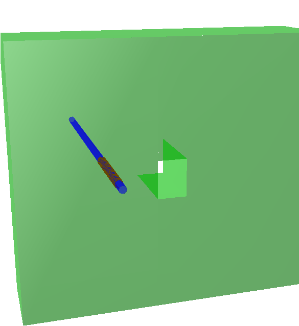

Geometry
Improvement of the standard overlap checker. The previous method was checking points on the visual mesh of volume shape against all possible overlapping partners.
The new method checks more points (currently 1000, in future configurable) on the volume outline or surface. This minimizes the number of non-detectable overlap
configurations.
The interface to activate the new checking method is the same as before:
gGeoManager->CheckOverlaps(ovlp);
where ovlp is the overlap tolerance (default 0.01 cm)
An example of overlap that was not detected before but is now:
